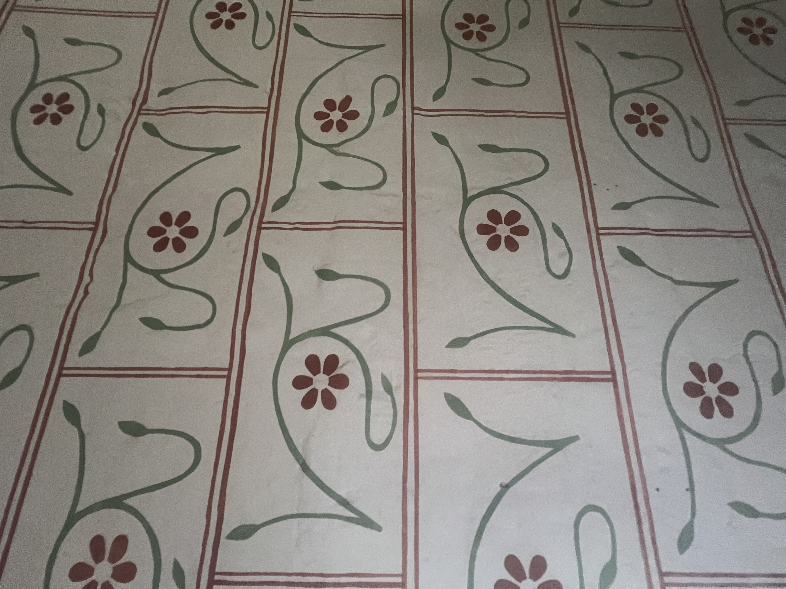

What music do you like to listen to while working?
calm music (Jax: ring pop)
Name three designers whose workyou find inspiring.
David hockeny, Martin venezky
Name something (a format, an item) you want to learn how to design but haven't had the chance to try to yet.
Figma
If you were a font, you'd be (you can't say helvetica or comic sans-- both jokes are played). Explain why? bodoni
Name one website that you rely on (try to avoid a platform like google/amazon/pinterest/etc). chatgpt chatgpt
[Ask at least one of your own questions to your interviewee] [Take a photo of your interviewee] 